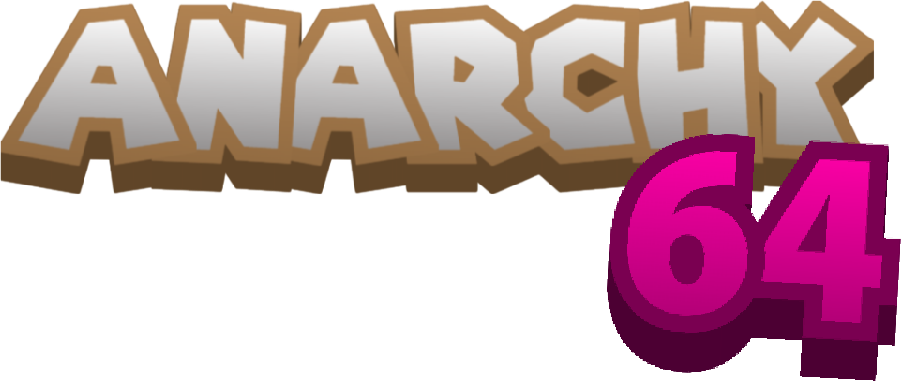

No ROM selected! (.z64, .n64)
Controls/Settings: Click the ⚙ icon inside the menu bar after loading your game to customize keyboard maps or connect a USB controller. Useful for better controls!

A web N64 emulator but with some design! Add your rom here!